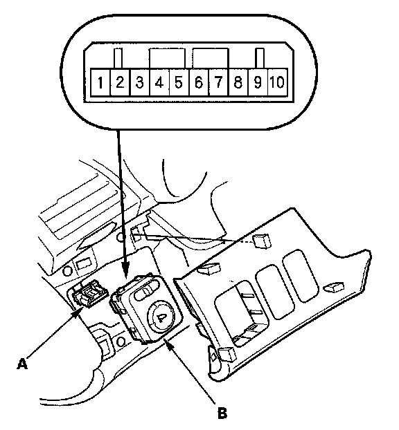
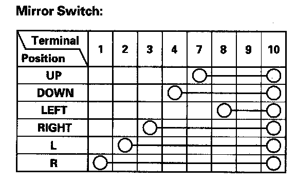

Power Mirror Switch Test/Replacement
Power Mirror Switch Test/Replacement1. Carefully pry the switch panel out from the dashboard.

2. Disconnect the 10P connector (A) from the power mirror switch (B).

3. Check for continuity between the terminals in each switch position according to the table.
4. If the continuity is not as specified, remove the screws and replace the power mirror switch.